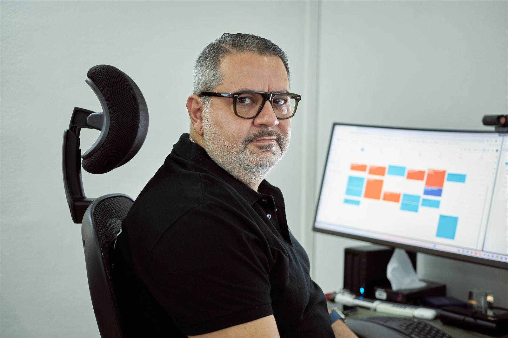
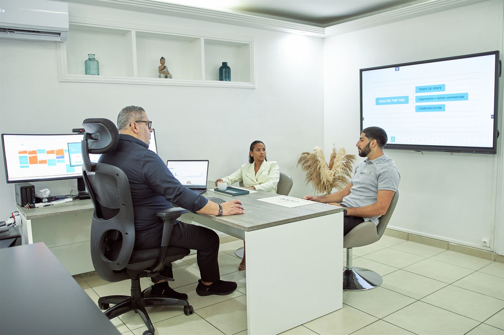

Tableaux de bord et automatisation, branchés sur vos vrais chiffres
Je construis moi-même les outils : espaces de travail sur Monday, automatisations avec Make, classeurs Excel qui se mettent à jour seuls. Vos mails, vos fichiers et votre logiciel de gestion se parlent, et personne ne ressaisit plus deux fois la même information.
- Monday
- Make
- Excel et Power Query

Ce qui tourne déjà chez des entreprises de Guadeloupe
- Le suivi des commandes et des conteneurs, alimenté directement par les mails des transitaires.
- Le cadencier des commandes fournisseurs, avec les dates de commande qui se calculent seules.
- Le planning du personnel, les congés et les tâches du dépôt, partagés par toute l'équipe.
- Le suivi des litiges avec les fournisseurs, du constat au remboursement.
- Les tableaux de bord de l'activité commerciale, branchés sur le logiciel de gestion.
- Le suivi des chantiers et des marchés, échéance par échéance.
Chaque fois, le point de départ est le même : une information qui existe déjà quelque part, dans un mail, un fichier ou un logiciel, et que quelqu'un recopie à la main.
Comment je travaille
-
On regarde comment l'information circule
Qui reçoit quoi, qui recopie quoi, où ça se perd. Avec vos équipes, sur leurs vrais dossiers.
-
On construit une étape à la fois
Chaque automatisation est essayée sur vos cas réels, y compris les rares, avant d'être mise en service.
-
Vos équipes s'en servent
Je les accompagne dans la prise en main. L'outil est construit pour elles, avec leurs mots.
-
Rien ne part sans votre accord
Aucune mise en service sans votre validation.
Pourquoi un consultant en gestion qui construit ses outils
Un tableau de bord n'a de valeur que s'il aide à décider. Je viens du pilotage et de la direction commerciale : je sais quels chiffres comptent avant de construire l'outil qui les fournit. Et je ne me contente pas de vous recommander un logiciel : je le construis, je le branche sur vos données, et je reste pendant la mise en route.
Ces outils nourrissent aussi Le Suivi mensuel : des chiffres frais, sans ressaisie, chaque mois.
Le tarif
Chaque projet est différent. Le tarif se fixe sur devis, après un premier échange : nous consulter.
Nous consulterQuestions fréquentes
Qu'est-ce que Monday ?
Monday (monday.com) est une plateforme de travail en ligne : des tableaux partagés par toute l'équipe, où chaque commande, dossier ou tâche a sa ligne, son responsable et son statut, avec des automatisations et des tableaux de bord.
Qu'est-ce que Make ?
Make est un outil qui relie vos applications entre elles : il lit un mail, un fichier ou un logiciel, et range l'information au bon endroit, sans que personne ait à la ressaisir.
Faut-il changer de logiciel de gestion ?
Non. On part de ce que vous utilisez déjà et on s'y branche chaque fois que votre logiciel le permet.
Combien coûte une automatisation ?
Cela dépend du travail à faire. Le tarif se fixe sur devis, après un premier échange : nous consulter.
Parlons de ce que vos équipes recopient à la main
Au bureau à Baie-Mahault, chez vous ou à distance.
- Téléphone0690 55 89 88
- WhatsAppÉcrire un message
- Mailcontact@cador-gp.com
